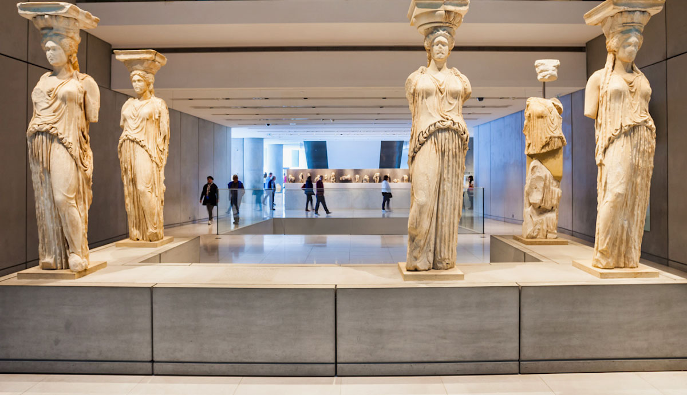
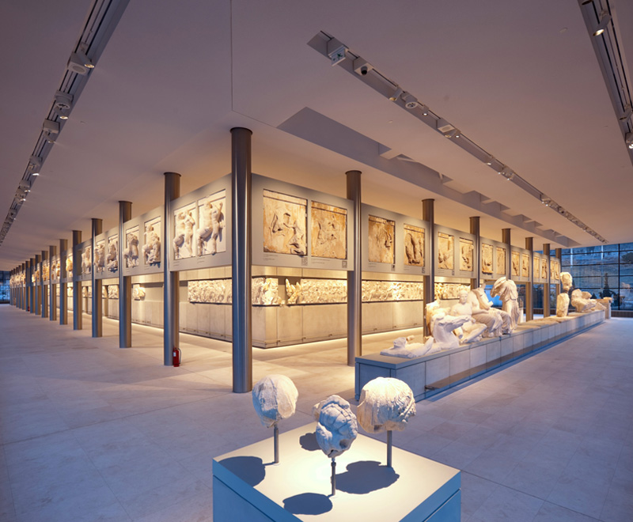
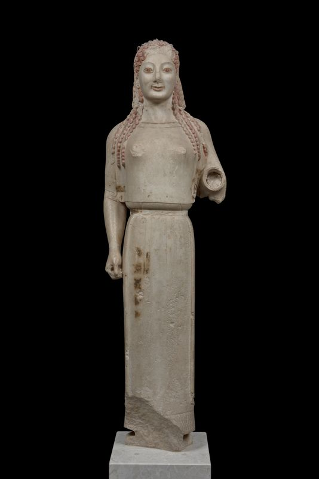

These graceful, 5th-century BC statues of noble maidens served as structural
columns on the south porch of the Erechtheion. The museum displays five of the
six original figures to showcase their intricate hairstyles and drapery up close.

Spanning the entire top floor, this glass-enclosed gallery is designed in the exact dimensions of the Parthenon.
It features a full-scale reconstruction of the 160-meter Parthenon Frieze,allowing visitors to view the breathtaking
mythological and historical reliefs at eye-level while enjoying a direct line of sight to the Acropolis itself.

Located in the sunlit Archaic Gallery, this iconic marble statue from roughly 530 BC is renowned
for retaining significant traces of its original vibrant paint. It offers a rare, vivid glimpse into
how ancient Greek sculptures were actually meant to be seen